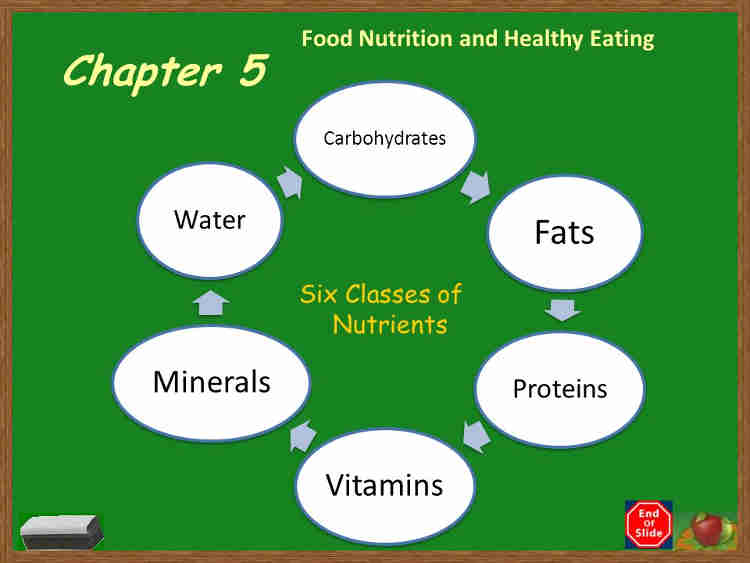

Food is anything intended to supply energy or nourishment to the body. It is any substance consumed by living organisms to provide nutritional support.It is usually of plant or animal origin, and it contains essential nutrients, such as carbohydrates, fats, proteins, vitamins, or minerals. The foods and beverages you eat and drink supply your body with the basic nutrients you need to support your health on a daily basis. Some of these food components must undergo digestion before you can benefit from them, although not all food component undergo digestion. All together these nutrients (water, protein, fat, carbohydrate, minerals and vitamins) promote your health when you consume them regularly through your diet. Remember humans are omnivorous animals that can consume both plant and animal products.
However, food is needed to repair and replace body tissues, build healthy body, supply energy for the body,maintain body temperature and build new cells, maintain life, or stimulate growth. Another way to categorise food is by the type of nutrient it contains and its role in the body. A nutrient is a compound your body needs for energy, growth, basic physiological processes and your overall health. Also nutrient is a source of nourishment such as food that can be metabolised by an organism to give energy and build tissue.

Nutrient is further divided into three categories which are plant Nutrient, animal Nutrient and plant and animal nutrient mixed together. The first class of the nutrient is ‘Rich’, the second class of the nutrient is poor, while the third class is regarded as nutrient barren and they all serve different purposes in the body.
These are plant foods that are rich in virtually all of the nutrients your body needs to function, stay healthy and perform well. They also have fiber and phytochemicals, and they do not contain substances your body does not need. It is recommended that you maintain a diet that is made up of at least 90% or More Plant-Based, Nutrient-Rich foods, meals, and menus for the best all-around results. Examples of these super-foods include:
These are animal-based foods that are rich in some nutrients but are missing whole categories of others. They also contain substances like cholesterol and saturated fat that the body does not need from dietary sources. It is recommended that you maintain a diet that includes no more than 10% animal foods if you decide to eat them at all. Examples of these foods include:
These are foodstuffs of both plant and animal origin that have been refined and stripped of their nutrients. While some are added back in for nutritional and marketing purposes, most of the ingredients are highly concentrated pleasure-stimulating substances that addict you, while making you fat and sick. It is recommended that you eat these foodstuffs rarely or avoid them all together. Examples of these foods include: